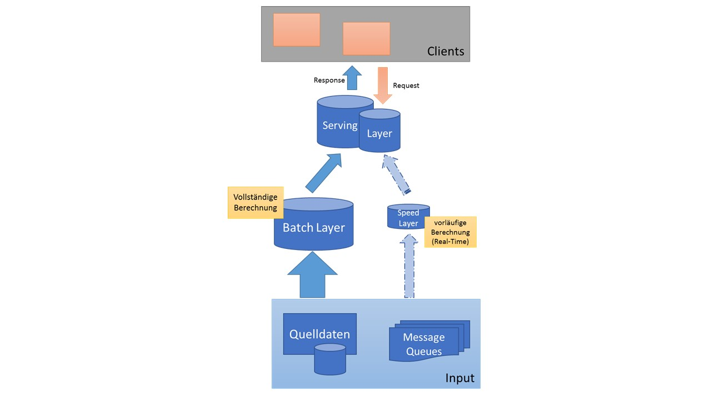

Welcome to Architektur
Architektur des Barocks - Merkmale und Bauwerke der Epoche
2020.12.13 11:09
menu Reisen Sizilien Catania Taormina Giardini Naxos Palermo Sciacca Inseln Liparische Inseln Natur Cava Grande del Cassibile Parco dei Nebrodi Ligurien Genua Portofino Cinque Terre Apulien Martina Franca Itria-Tal Kalabrien Tropea Latium Rom Subiaco Reise planen Reiseführer Sprachführer Kunst Stil-Epochen Architektur Kunst Ausstellungen Biennale di Venezia Museen Mailand Neapel Rom Venedig Verona Architekten Alvar Aalto Renzo Piano Carlo Scarpa Maler und Künstler Michelangelo Raffael Kultur-/Naturerbe Gärten foto.galerie Home Reisen arrow_drop_down Reisen in Italien Sizilien arrow_drop_down Reisen auf Sizilien Catania Taormina Giardini Naxos Palermo Sciacca Inseln Liparische Inseln Cava Grande del Cassibile Parco dei Nebrodi foto.galerie Reiseführer Ligurien arrow_drop_down Reisen in Ligurien Genua Portofino Cinque Terre foto.galerie Reiseführer Apulien arrow_drop_down Reisen in Apulien Martina Franca Itria-Tal foto.galerie Reiseführer Kalabrien arrow_drop_down Tropea Reiseführer Latium arrow_drop_down Rom Subiaco foto.galerie Reiseführer Reise planen arrow_drop_down Reiseführer Sprachführer Kunst arrow_drop_down Stil-Epochen arrow_drop_down Architektur Kunst Ausstellungen arrow_drop_down Ausstellungen in Italien Biennale di Venezia Museen arrow_drop_down Mailand Neapel Rom Venedig Verona Architekten arrow_drop_down Alvar Aalto Renzo Piano Carlo Scarpa Maler und Künstler arrow_drop_down Michelangelo Raffael Kultur-/Naturerbe Gärten foto.galerie Home Kunst Stil-Epochen Stilrichtungen der Architektur Architektur des Barocks
Architektur des Barocks
Die Architektur des Barocks zeichnete sich durch Prachtbauten aus. Prunkvolle Paläste, Kirchen und Schlösser mit großzügigen Parkanlagen repräsentierten den feudalen Lebensstil von Fürsten und Klerus.
Architektur des Barocks: Palais du Luxembourg, Paris© Brigitte Loosen
Merkmale der architektonischen Stilrichtung "Barock" und Beispiele von Bauwerken:
Zeitraum
Ausgehend von Italien in der Frühen Neuzeit (15. – 18. Jahrhundert) folgte die Epoche des Barocks nach der Renaissance und wurde durch den Bau- und Kunststil des Rokoko abgelöst.
Italien 1570 – 177017. + 18. Jahrhundert Frühbarock 1570 – 1630
(Seicento) Hochbarock 1630 – 1720
(Seicento) Spätbarock 1720 – 1770 Frankreich 1610 – 1770
17. + 18. Jahrhundert Frühbarock 1610 – 1643
(Louis-treize) Hochbarock 1643 – 1715
(Louis-quartorze) Spätbarock 1720 – 1770 Mittel-Nordeuropa 1650 – 1750
17. + 18. Jahrhundert
Merkmale des Barocks
Zwischen dem 17. und 18. Jahrhundert entstanden Barockbauten nach einer symmetrischen Bauweise mit geschwungenen Formen im Grundriss. Die großzügig gestalteten Gebäude dienten vorrangig als monumentale Repräsentationsbauten der Adelsfamilien und der katholischen Kirche.
Innenräume erhielten üppige Verzierungen oft aus kostbaren Materialien wie Marmor und Goldauflagen. Mit Kartuschen - flächigen Dekorationsrahmen - und filigranen Stuckarbeiten wurden Wände, Fassaden und Decken ausgestattet. Prunkvolle Spiegelsäle sollten die Raumwirkung erweitern.
Schlösser mit weitläufigen Parkanlagen bildeten prächtige Gesamtkunstwerke. Die in streng geometrischen Formen angelegten Barockgärten sind durch großzügige Rasenflächen, üppige Blumenbeete und feingeschnittenen Hecken gegliedert und mit Wasserspielen ausgestattet.
Barockkirchen erhielten meist konkav und konvex geschwungene Fassaden mit einem zentralen Kuppelbau. Der Lichteinfall in Kirchen war für die barocken Architekten ein wichtiges Gestaltungselement. Effekte aus Licht und Schatten sollten den Kirchenbesuch zu einem eindrucksvollen Erlebnis machen.Bauteile und Gestaltungselemente
Konkav-konvex geschwungene Bauelemente Kolossalordnung (über zwei Geschosse verlaufende Säulen oder Pilaster) Doppelsäulen Pilaster (Säulen ohne statische Funktion zur optischen Gliederung von Wänden und Fassaden) Kuppeln Gesprengter Giebel (in der Mitte geöffneter Giebel zur Gestaltung von Fassaden) Kolonnaden (Säulengang mit geradem Gebälk) Kartusche (schmückendes Gestaltungselement) Volute (schmückendes schneckenförmiges Gestaltungselement) Skulpturen, Stuckarbeiten, Fresken Geschwungene, große Treppen im Außenbereich Volute an der Kirche Santa Maria della Salute, Venedig© Brigitte Loosen Kuppel des Invalidendoms, Paris
© Brigitte Loosen
Anwendung des Baustils
Sakralbauten Profanbauten: Schlösser, PalästeBauform der barocken Kirchen
Verschmelzung von Langbau und zentralem KuppelbauBerühmte Bauwerke und Architekten des Barocks
Italien
Kirche Santa Maria della Salute, VenedigArchitekt: Baldassare Longhona
Baubeginn: 1630 Kirche Santa Maria della Salute, Venedig
© Brigitte Loosen Kirche Sant’Agnese in Agone, Rom
Architekt: Girolamo Rainaldi
Baubeginn: 1652 Petersplatz, Rom
Architekt: Gian Lorenzo Bernini
Baubeginn: 1656
Frankreich
Kirche Saint-Sulpice, ParisBaubeginn: 1660 Turm mit Säulen korinthischer Ordnung, Kirche Saint Sulpice, Paris
© Brigitte Loosen Schloss Versailles, Versailles
Architekt: Louis Le Vau
Baubeginn: 1661 Invalidendom, Paris
Architekt: Jules Hardouin-Mansart
Baubeginn: 1679
Europa
Zwinger, DresdenBaubeginn: 1709 Karlskirche, Wien
Baubeginn: 1716 Neues Palais, Potsdam
Baubeginn: 1763 Konkav geschwungene Fassade, gegliedert durch Pilaster, Kirche St. Peter, Wien
© Brigitte Loosen
Sizilianischer Barock - Üppig und verspielt
Eine besondere Form des barocken Baustils ist der sizilianische Barock. Auf Sizilien entwickelte sich zwischen dem 17. und 18. Jahrhundert eine markante Ausführung des Barockstils. Aufgrund des verheerenden Erdbebens im Januar 1693 im südöstlichen Teil der Insel, ergab sich in vielen Orten der Wiederaufbau und die Neugestaltung im barocken Baustil.
Charakteristisch für den sizilianischen Barock sind konkav-konvex geschwungenen Fassaden, die von den römischen Baumeistern übernommen wurden, üppige Dekorationen mit prachtvollen Putten und grinsenden Masken, Balkone mit schmiedeeisernen Geländern und die Verwendung des schwarzen Lavagesteins.
Vor allem die Stadt Catania an der Ostküste Siziliens erhielt durch den Architekten Giovanni Battista Vaccarini ein barockes Aussehen . Sizilianischer Barock, Außenfassade des Doms, Catania - Sizilien© Brigitte Loosen Stil-Epochen Zeittafel Romanik Gotik Renaissance Barock shop library_books hotel Reisen Sizilien Kalabrien Apulien Latium Ligurien Reiseführer Italien Hotels in Italien Kunst Stil-Epochen Ausstellungen Museen Architekten Maler und Künstler Kultur-/Naturerbe foto.galerie Sizilien Apulien Latium Venetien Reise planen Reiseführer Italien Hotels in Italien Sprachführer Info Historie Presse
Sitemap Kontakt Impressum Datenschutz
2020 Kunst und Reisen
